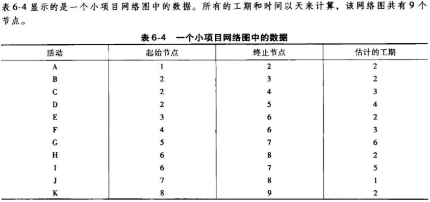
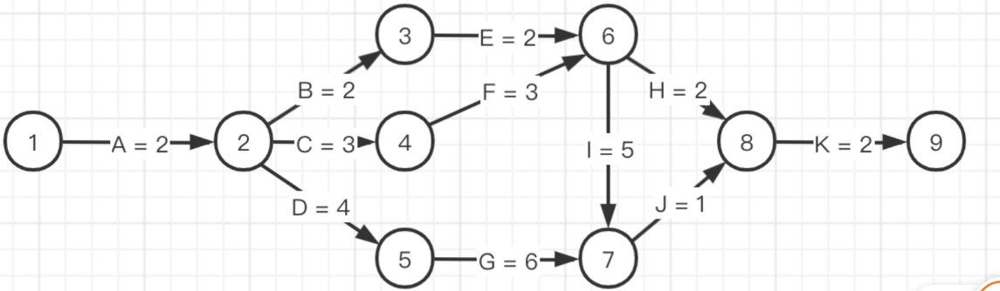
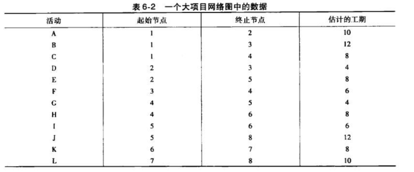
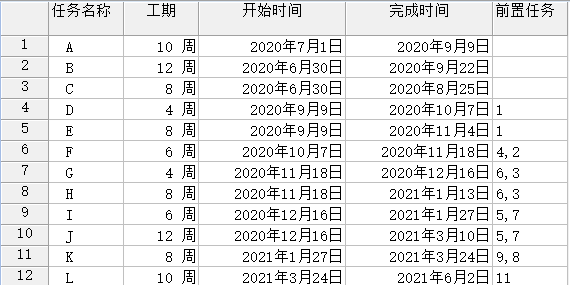
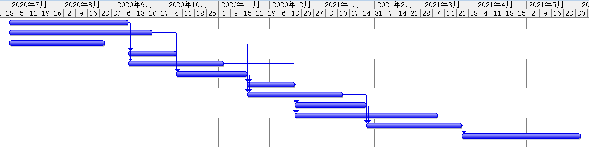
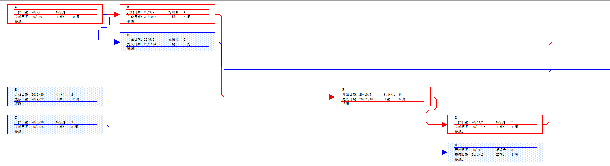
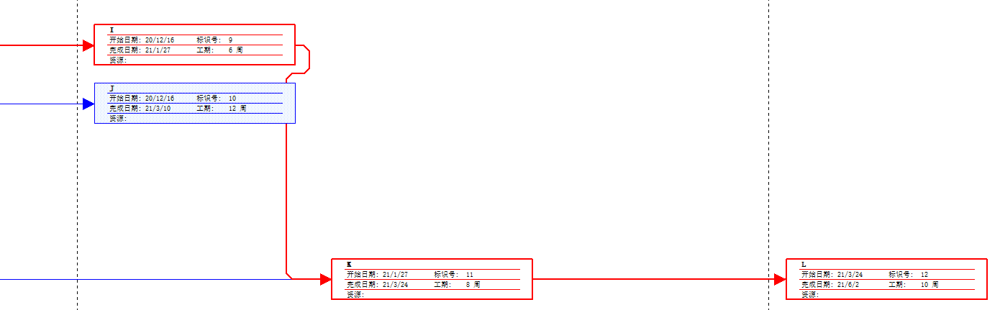

IT项目管理-6
教材练习题6

a. 双代号网络图

b. 网络图中的所有路径及长度
- 路径1： A - B - E - H - K， 长度 = 2 + 2 + 2 + 2 + 2 = 10天
- 路径2： A - B - E - I - J - K，长度 = 2 + 2 + 2 + 5 + 1 + 2 = 14天
- 路径3： A - C - F - H - K，长度 = 2 + 3 + 3 + 2 + 2 = 12天
- 路径4： A - C - F - I - J - K，长度 = 2 + 3 + 3 + 5 + 1 + 2 = 16天
- 路径5： A - D - G - J - K，长度 = 2 + 4 + 6 + 1 + 2 = 15天
c. 关键路径及长度
关键路径： A - C - F - I - J - K，长度 = 2 + 3 + 3 + 5 + 1 + 2 = 16天
d. 完成项目所需的最短时间
完成项目所需的最短时间16天，因为关键路径表示项目的最长的总工期16天，且是整个项目的最短完成时间。
教材练习题7
附练习4中的相关数据

任务进度表

任务进度表显示每个任务的进度信息，包括任务名称、开始时间、完成时间、最晚开始时间、最晚完成时间、可用可宽延时间和可宽延的总时间。可用可宽延时间即为自由时差，可宽延的总时间即为总时差，由此能得出项目的浮动时差。跟踪甘特图视图中可以查看每个任务的进度百分比。
甘特图

甘特图用于显示项目的信息，视图的左侧用工作表显示每一项任务的详细数据，包括任务名称、工期、开始时间、完成时间和前置任务等。视图的右侧用条形图显示任务的信息，每一个条形图代表一项任务，长度代表工期，箭头连线代表时间依赖，条形图的上方为时间刻度，通过条形图可以清楚地表示出任务的开始和结束时间，各条形图之间的位置则表明任务是一个接一个进行的或相互重叠的。
网络图


网络图以流程图的方式来显示任务及其相关性，用于跟踪项目中的任务流程。一个框代表一个任务，每个任务框中显示每一项任务的详细数据，包括任务名称、开始时间、完成时间、标识号和工期。框与框之间的连线代表任务间的相关性。箭头指向节点的前置任务是箭头的开始节点，需要在前置任务完成后才能开始进行。红色方框连成的路径即为该项目的关键路径，该路径长度表示项目完成所需的最短时间。
看板在软件项目中的使用
(内容来源： https://zhuanlan.zhihu.com/p/48204823 )
看板的起源
看板在制造业较为常用也有很长的历史，在软件行业算是比较新的方法。100年前，在福特汽车的大规模生产线上，从产品线的设计，从工序的设计，体现了管理的价值。通过流水线大规模生产，汽车产品的成本大大降低，汽车推动了整个美国经济和社会的发展。然而到了20世纪60年代开始，日本开始快速发展，当时最为突出的就是丰田制造。他们发明了更为有效的生产管理系统。这种管理方式后来逐渐演变成对价值流的控制方法—精益。在这过程中，丰田发明了一个工具就是——看板。看板就是用一块板来传递和控制生产环节，其核心理念就是杜绝浪费，提高效率。
看板来自日语“看板”，カンバン，日语罗马拼写：Kanban。在看板标示系统中常将塑料或纸制成薄板，将产品名称及数量写于其上。看板在生产线上分为两类：领取看板和生产看板，旨在传达的信息是：“何物，何时，生产多少数量，以何方式生产、搬运”。看板的具体信息包括：零件号码、品名、制造编号、容器形式、容器容量、发出看板编号、移往地点等信息。
在看板方法在制造业发展的几十年，与现在的信息化管理系统相结合，帮助现在的产品线进行管理控制。看板方法成为精益理念的重用工具。
2006年前后，David J. Anderson认为看板方法其核心在于帮助企业创造一种能力——提升敏捷性。通过David的工作，看板方法被改进被应用于软件研发领域。大致在这个历史时期，经过管理人士的努力，软件领域的敏捷理念与制造业的精益思想开始相互借鉴与融合。这一融合与创新，现在已经在研发类组织的管理领域，被验证为积极有效地方法。看板正是这一融合的积极纽带。
近几年，通过我们的实践和对其它研发型组织的访问，看板方法的使用占比，现在仅次于Scrum方法。且得到了很好的反馈。它大大提升了团队的价值交付能力，并帮组了团队的自组织管理。
看板使用
看板的使用方法，推荐大家阅读《看板与Scrum相得益彰》，该文论述较为详细。
看板中有以下内容：
1. 泳道（或称甬道）：每个泳道都是过程中的一个阶段。例如研发项目的开发过程：Backlog（类似Scrum中的代办事项）→Selected（一般有PO或产品经理来选择）→Develop→Deploy→Live。这些阶段都是有团队内部共同定义的。
2. WIP限制（Limit Work In Progress）
3. 卡片：团队需要处理的任何事。研发团队聚焦的是代交付的新特性，这样一般用Story或者User case。需要注意的是，这些待交付的需求，需要严格的排序，团队需要围绕高优先级的需求，开展工作。
一般这块看板需要在固定时间内定期review，至少每天一次。看板需要放在工作区域，这样所有人随时随地就可以看到当前的进程，只要有一个人移动了卡片周边人就可以看到变化。另一个人就可以直接继续后续的工作。
虽然看板不是很“重”的方法，但是看板管理方法却折射着很多管理的方向。当然，像看板管理这种敏捷式的方法适合研发类项目，以及面对不确定性高、面对开发性高要快速响应变化，快速提供有价值的交付的项目。但是如果是造楼或基础性建设项目就不太适用于敏捷方法。
看板的功能
看板在整个敏捷管理的过程中主要有4个作用：
1. 生产以及运送工作指令
没有看板的时候，都是管理者或PM下达指令，但是敏捷强调自适应组织，所以，通过 看板可以实现自己识别工作任务。
2. 防止过量生产和过量运送
精益思想下过量就是浪费。所以，会有在制品（WIP）的限制。
3. 进行“目视管理”的工具
即看板是可视化的工具。越透明的工具越有帮助。一般大量使用电子化工具的团队交互反而比较差，大家不知道也不关心别人做什么，交流少发现问题也晚。这些工具反而限制了人与人的当面沟通。对于敏捷项目来说透明性及时性非常重要，所有看板比较符合敏捷的要求
4. 改善工具
传统项目中为了实现项目的可视化管理，需要通过纸面化的文档记录项目各个阶段的状态，来实现流程的可视化、可跟踪性。同时需要类似PJ协调员或项目经理这样的专职人员来跟踪和管理项目的状态，需要QA这样的第三方角色监控项目团队管理过程。如果有变化，需要专职人员来找到更新，变更文档这些文档，之后需要通过向团队成员培训。但是，通过看板可以减少这些不必要的工作，同时可以让项目团队内部自发实现过程改进。敏捷中的改进都是自我发起的，定期回顾，对于不好点进行总结后，改进点进行优先排序。
看板的管理原理
1. 流式管理
看板是典型的流模式的敏捷管理方法，是当前流模式的主体；而基于迭代增量模式的敏捷方法，一直在不断变化改进，早期有动态原型法，水晶法等方法，现在主流的是Scrum。Scrum是增量模式，通过时间盒的方式不断迭代，每个迭代周期一般2周～30天。但在需求零散时，无法在2～3周很明确做什么时，基于稳定系统的小需求改动（类似新CR或bug修复，新配置等），又如在运维阶段时最好使用看板。而在新产品研发比较适用于Scrum。前端的开发，需要模块化的交付用户一组功能，最小可交付或最小可交付价值比较大的时候，适合用Scrum，后端的开发适合用看板，因为基础组建往往变化不大，且会成为前端开发的依赖。
2. 在制品限制（WIP）
如上图，一个人扔一个球没有问题，同时扔两个球没有问题，但是同时扔三个以上就为出问题。在项目团队中又要开发又要测试又要做需求，看起来同时在进行，但是人就那么多，实际都堵塞在那里，反而没有产生任何价值。通过在制品限制，关注团队的交付能力，996/997就不会出现。一个团队在制品上限是三个，那么就把焦点汇聚在这三个上，完成后再做接下来的三个。这种方式远比图上同时扔九个球有效率的多吧！同样，在路上堵车也是低效率，要是带着一车开发人员堵车，大家都等着就是浪费。高效率的团队就是一个持续稳定的流，稳定的交付，时时刻刻都能给需求提出者一个反馈，交付高价值的东西。
3. 基于敏捷和精益原则
看板是综合敏捷和精益的管理方法。看板在制造业出现被人引用到了IT开发行业。
- 敏捷方法有很多，讲究阶段性交付有价值的东西。在看板里也有很好的实现。看板同时有体现了精益的理念。精益的理念之一就是关注价值。看板的流导向价值就是以有价值的过程导出有价值的结果。以价值流为导向，保证最终输出物的价值，所有工作是产生这个价值的过程，是流动的。
- 在刚才看板的例子中，可以看到发布人员看到Done的泳道中有东西时，自己会把卡片中已实现的需求拉过来进行发布，这时WIP就会变少。此时，开发人员会从需求的泳道中去拉新需求进行开发。每个人的工作都是以拉的方式实现，而不是推式。推式的方式容易造成堵塞。
- 尽善尽美，这就是改善的理念了。所有敏捷方法都会强调回顾反省。让团队通过反省来提升自己。当然反省反馈是所有管理模式（方法）中都包含的最为强大的部分。
介绍一些团队看板管理使用的工具。看板管理简单就在于它只要一块板就可以了。可以在淘宝或京东上购置一块，价格也不贵。当然在很多企业在实现看板管理方法时也会用一些自动化工具，目前行业中常有的有以下几种，大家可以进行参考，根据自己项目选择合适工具。
- Tower
- Trello
- Leangoo
- Jira/Jira Agile
- 腾讯Tapd
- 百度iCafe
综上所述，为什么说看板方法是重要的管理工具，理由如下：
- 过为简单——简单的方法，适应性更强，团队可以快速使用。
- 小团队使用——大型组织通过被激活的小团队源源不断的交付价值。
- 缺乏目标结果导向——敏捷与精益都强调价值，团队通过交付价值，已实现目标。
- 被充分证实——管理方法是经验科学，通过不断充分的实践，该方法被证明是有效的。
- 理念先进性——敏捷与精益管理理念，是大规模制造和科学管理理念的进一步开拓。
在敏捷实践中，无论选择哪种方法最终都应该遵循敏捷的理念。做任何事情多一点少一点都可能会带来坏处。无论敏捷还是传统方式，不要片面只看一点，要找到平衡点才是最有效的。